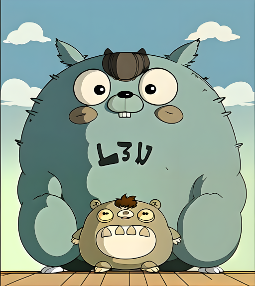

Go is bigger than crab!
Ever wanted your custom Gopher but didn't have the drawing skills?
Well seems now you can generate them. Type the title into your favorite AI prompt to get this:

Well no. But it's close enough so let's dive in...
What you need
Which is a 1-click install of Stable Diffusion with an alternative web interface. You can choose a different approach but this one is pretty simple and I am new to this stuff.
Make sure you meet the hardware requirements (GPU) and have enough disk space (this is a whopping 20+GB install).
This one does all the magic to ensure the generated image resembles a gopher.
Place it into EasyDiffusion/models/lora/.
By pure chance, I used this model instead of the default one and it gave amazing results.
If you are looking for the classic gopher style use the default (sd-v1-5), but this one is more fun.
Place it into EasyDiffusion/models/stable-diffusion/.
It tends to give the gophers a bit of a teddy bear look though so experiment with the settings (e.g. increase the strength of the golang LoRa to
0.8). And regenerate until you get something that pleases you.
This one is optional but also has some nice effects when adding it into the mix.
Place it into EasyDiffusion/models/lora/.
See What are LoRA models and how to use them in AUTOMATIC1111 for the difference between LoRa and base models.
Example
- sd (top-left)
- sd+gopher (top-right)
- anything+gopher (bottom-left)
- anything+gopher+ghibli (bottom-right)
Settings
Start Easy Diffusion and it should open http://localhost:9000/ in your browser.
Network access
Under Settings you can configure it to allow remote access.
It is NOT SECURED so best to only do this in a safe local environment.

Image
- Seed:
Randomfor new creations. - Number of Images:
4to have some options to choose from. - Model:
AnythingV5Ink_inkor keep the standard model. - Image Size:
512x512is fine for the usual gopher image as we can upscale it later but you can choose a different format. - LoRa:
gophers_v1 [0.5]and optionallyghibli_style_offset [0.5]as well. - Output Format:
png
Images are NOT STORED by default and closing the browser tab causes loss of data. So remember to save the generated
imageandjson. You can do this by highlighting it and clicking the corresponding button. Or download the full set withDownload imagesat the top.
The Prompt
In the Prompt, you can add a comma-separated list of keywords of what you want in the image.
You can also emphasize specific keywords with brackets (e.g. (coffee) or (holding a mug)).
Be sure to add one of golangGopher (recommended), gopherArt, gopherCircle or gopher3d for the gopher model.

Have a look at the Prompt Guide for advanced techniques.
There is also the Negative Prompt where you can define what you don't want in the image.
You may add rust, ferris here, but best to leave this for later when you want to get rid of something specific.
The first attempt
Fill the prompt with golanggopher, <keywords...> and hit Make.
Here's what I got for golanggopher, podcast:

If there is nothing of interest try again. But if one has a nice theme or composition don't start from zero. Highlight the image and click
Make Similar Imagesto use it as input.
In my case, the upper left already looks pretty nice, but there are some issues...
Fixing the teeth
See how there are no teeth? This happens pretty often when they are missing or not right.
Highlight the image and click Use as Input.

If you've done something else in the meantime you should select
Use these settingson the top right first.
Klick Inpaint.

Mask the part to regenerate.

Save it, hit Make and if you're lucky that fixes it.

If it didn't work you can try to add
teethto the prompt. Otherwise set theseedto random and try again.
Fixing the logo
The logo looks okay, but it isn't an O.
It's pretty close though, so mask the part that doesn't fit.

This one worked on the first try.

Upscale
Finally, highlight the image and click Upscale for a higher resolution.
Then highlight it again to save it with Download Image.

So what about the big one above
That is a composition of two generated images.
The big one (golanggopher, studio ghibli, totoro):

The small one (golanggopher, crab):
- By removing the background.
- Placing it over the other image.
- Overpainting parts of the old gopher.
- Importing it in
Easy DiffusionasInput. - Masking the outline for inpainting.
- And letting it regenerate various parts a couple of iterations.
- It ended up as above.

Examples
You can find some examples at https://github.com/rsteube/gopher.
Have fun!
Oh, and give Easy Diffusion a tip if you like it.